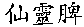

|
|
xian ling pi

yin yang huo
淫羊藿
Edited
by:
Joe Hing Kwok Chu

| Pharmaceutical
name: |
Herba Epimedii |
| Biological name: |
Epimedium grandiflorum Morr.,
Epimedium brevicornum Maxim., Epimedium sagittatum (Sieb.
et Zucc.) Maxim., Epimedium pubescens Maxim., Epimedium
wushanense T. S. Ying, Epimedium koreanum Nakai |
| Pron.
in Japanese: |
inyokaku, also called
 |
| Pron.
in Korean: |
umyanggwak |
| Pron.
in Cantonese: |
yam yong fok |
| Common
Name: |
epimedium |
| Distribution: |
Shaanxi, Liaoning, Shanxi,
Hubei, Sichuan |
| Properties
(characteristics) |
Acrid, sweet, warm |
| Channels
(meridians) entered: |
Kidney, Liver
入 肝 、 腎 經 |
| Actions
& Indications: |
Tonifies the
kidneys and
fortifies the yang: for deficient kidney yang patterns
with such symptoms as impotence, spermatorrhea, frequent
urination , forgetfulness, withdrawal, and painful cold
lower back and knees due to kidney yang deficient.
Expels wind-damp-cold: for wind-damp-cold painful
obstruction (pain and water retention) with such symptoms as spasms or cramps in
the hands and feet, joint pain, and numbness in the
extremities due to bad circulation.
Tonifies the yin and yang and harnesses ascendant
liver yang: for lower back pain, dizziness, and
menstrual irregularity from deficient liver and kidneys
(shenxu) and subsequent ascendant liver yang (gan yang).
Hypertension during menopause. 陽 萎 早 泄 ， 腰
膝 無 力
， 筋 骨 酸 痛
，
婦 女 更 年 期 高 血 壓 。 |
| Medical
Function: |
Medical
Function:
- 1.Improve endocrine
system. Improve axle: hypothalamus, pituitary, sex
hormones and adrenal cortex .
- 2. Improve DNA metabolism.
- 3. Improve immune system.
- 4. Anti-aging effect.
- 5.
Improve circulatory system. a. Improve function of
the heart. b. Lower blood pressure by
dilution of peripheral blood vessels.
- 6. Improve the blood
system. a.. Prevent platelet coagulation. b. Lower
viscosity of the blood. c. Improve production of white
blood cells.
- 7. Improve ability to resist lack of
oxygen.
- 8. Anti-inflammatory and antibacterial. 9. Lower
lipoprotein and cholesterol.
- 10. It inhibits asthma
caused by increased histamine.
-
11. Small amount: promotes urination
-
12. Large amount:
inhibits urination
- 13.Reduces the number of
estrogen receptors, prevent spreading of cancer cells, and
destroy cancer cells.
- 14. Prevents and reverses bone loss
|
| Chemical
ingredients: |
The
main ingredients are flavone type of compounds, fat,
saponins and essential oil.
Ceryl alcohol,
hentriacontane, phytosterol, palmitic acid, stearic
acid, oleic acid, linoleic acid, linolenic acid,
bilobanol, magnoflorin, glucose, fructose, icariin,
icariside I ), Icariside II (epimedoside A).
Epimedin A, Epimedin B, Epimedin C,
Epimedokoreanoside I, Epimedokoreanoside II, Epimedoside
A, I-karisoside A, (quercetin),
4'-methoxy-5-hydroxy-8-3,
3-dimethylallylflavone-3-glucosyl (1--2)
rhamnoside-7-glucoside), 4'-methoxy-5-hydroxy-8-3,
3-dimethylallylflavone-3-xylosyl (1--2)
rhamnoside-7-glucoside), 4'-methoxy-5-hydroxy-8-3,
3-dimethylallylflavone-3-rham-nosyl (1--2)
rhamnoside-7-glucoside.
Isoquercetin, icaritin-3-O-α-rhamnoside, hyperin,
sagittatoside A, sagittatoside B, sagittatoside C,
sagittatin A, sagittatin B,
Anhydroicaritin-3-O-α-rhamnoside, Icariside E6,
Icariside E7, Icaride A1, Icaride
A2, Icariside D3, Icariside
H1, Icariside B9.
Epimedoside C, baohuoside VI, baohuoside I,
rouhuoside.
Wushanicariin. |
| Dosage: |
6-15 g. |
| Samples of formulae: |
With
wu wei zi, gou qi zi, and sha yuan ji li for deficient
Kidney impotence and infertility. With
sang ji sheng for painful obstructions, especially
paralysis and pain of the lower extremities, or muscular
contraction and numbness of the extremities.
With xian mao, Huang bai,
and zhi mu for menopausal symptoms such as facial
pallor, lower back pain, nocturia, menstrual
irregularity, and dizziness from deficient Liver and
Kidney yin and subsequent ascendant Liver yang. This
combination is also used for the abovementioned
ascendant Liver yang symptoms in men.
Source of above formula: Bensky
and Gamble. |
| Today's
Usage: |
1. For impotence:
- A. Use yin yang huo 15 g. with Tu si zi 15 g. Grind
into powder. 5 g a day in 3 servings. To be taken
with yellow rice wine. 20 days is one treatment.
Take every day first thing in morning and before
bed. Massage the perineal area from left to right
and right to left about 10 times .
- B. Every night use chuan xiong 15 g and xi sin
15 g. Boil a decoction and put in bathtub and sit for 20
minutes. Avoid intercourse for 100 days. Avoid
overexertion and getting chilled. 7 days is one
treatment.
Total cases: 38. 8 cases got better. 20 cases
completely healed. After 2 years, no patients had
recurring problems. Total effectiveness: 92 per cent.
2. For white patches of
vagina.
3. For neurasthenia .
4. For coronary disease.
5. For viral infections
of the heart muscle.
6. For chronic bronchial infection and asthma.
7. For treating the
decrease of white cells.
8. For treating
inflammation of the gray matter of the spinal cord. |
| Modern
Research: |
Often steeped in wine
for both kidney yang deficiency and painful obstruction.
Traditional preparation by stir frying with fat of goat
is an effective method. Although stir frying with goat
fat does not increase the total saponin in the leaves
but the total saponin that dissolves by boiling in water
increases; thus , improve the efficacy of the herb. |
| Cautions: |
Contraindicated in patients
with fire from yin deficiency.
This herb should not be taken as a decoction, over
prolonged periods. This herb can damage the yin. In some
people, ingesting it can lead to dizziness, vomiting, dry
mouth, thirst, and nosebleeding |
|
If
you need more information and bibliography in a hurry, go to this
link: Research
Librarian
Last update: Nov 19, 2003;
10:00 a.m. LA
|